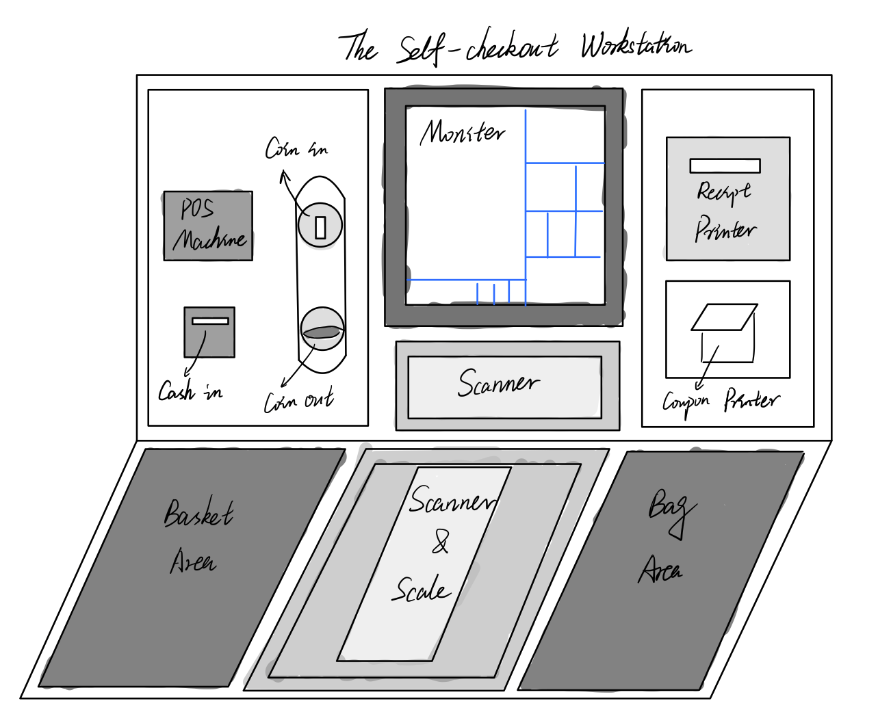

Personas & Storyboarding
Part 1: Preparation
Interface: Grocery store self-checkout station
Questions (the experience with the interface):
- When (In what situation) will you use this self-checkout station? (motive)
- How about your experience with this self-checkout station? (experience)
- What do you think of this self-checkout station? Is it helpful? efficient? or easy to use? (Expectation)
- Is there anything confusing you or making you feel inconvenient while using this self-checkout station? (challenge)
- Which one would you more prefer: the self-checout station by yourself or checking out at the cashier next time/in the future? Why? (expectation)
Sketch and description of the interface:
- The sketch of the self-checkout workstation:

Figure 1: The sketch of the self-checkout workstation at stop&shop (a grocery store). The customers of the grocery store use it to scan items and puts them in a bag, then pay for the items using cash or a card. And the self-checkout workstation will print out receipts and coupons. The front and bottom scanner scan the barcodes of items, and the weight of the items in the bag is measured by the scale on the bottom. The consumers can pay for items using a card via electronic POS machine, or cash and coin via the corresponding windows on the left-hand side. The receipts and coupons will be printed out throguh the printers on the right-hand side. All checked-out items needs to be put in the bag area.
Part 2: Recording Observations
The key observations (general patterns in their interactions with the interface, how did the users react while using the interface? how des it differ from other users?):
- Most consumers know the basic procedures to use this interface, i.e., scanning product barcodes and place products into a bagging area, sometimes searching and weighing products, paying for the items via a card or cash, and getting receipts and coupons.
- Searching and Weighing products take much more time than items that just need to be scanned for the barcodes.
- In the searching or scanning stage, if consumers type in wrong quantity of items or click wrong product name in the searching screen, it needs staff to intervene and override previous mistaken operation.
- The self-checkout workstation falls when consumers want to buy age-restricted items like alcohol, tobacco, and so on. It requires staff of the grocery store to check the customer's ID and validate the purchase.
- The instructions are not clear when buying heavy items like a pack of spring water, for example, should customers lift it up to scan its barcode and put it into the bagging area? Or is it okay to leave it in the shopping cart and just searching its name and typing in the quantity?
Interview questions:
- When (In what situation) will you use this self-checkout workstation?
- How about your experience with this self-checkout station?
- What do you think of this self-checkout station? Is it helpful? efficient? or easy to use?
- Is there anything confusing you or making you feel inconvenient while using this self-checkout station?
- Which one would you more prefer: the self-checout station by yourself or checking out at the cashier next time/in the future? Why?
The summary of the interviewees' response:
- When there's a (long) queue in the cashier lane and a clear self-checkout workstation, the customers will use the self-checkout workstaiton.
- Overall, the interviewees are generally satisfied with their experience with this self-checkout worksation. They're quite used to this experience.
- The customers think this self-checkout counters is efficient, helpful, and easy to use. They especially think the self-checkout workstation can reduce wait times compared to using a cashier lane.
- The interviewees say that difficulty in entering goods and frequent overrides were their biggest concerns with this interface.
- The majority of the interviewees would be more likely to use self-checkout if the interface was improved next time/in the future. Because the speed of transaction, perceived control of time, reliability, and ease of use make the customers more preferred this interface.
Part 3: Personas
Busied Momany is a married mother of three kids and has a full-time job, she needs to prepare dinner for her family and rushes to grocery store to by ingredients in hurry.

The interface problems that the persona face:
- In the searching or scanning stage, if consumers type in wrong quantity of items or click wrong product name in the searching screen, it needs staff to intervene and override previous mistaken operation.
- Searching and Weighing products take much more time especially when the barcode of the produce is missing.
Explain why & how this persona represents the users of this interface:
- People in hurry want to get checked-out as fast as possible, and the problems that the persona (a mom with a full-time job) face will also very possibly happened to them. The persona's thoughts, feels, says, and what he/she does could represent this busy group of customers in grocery store. That's the reason that this persona could stands for the users of this interface.
Evan Adultant is an adult who likes to gather with his friends and organizes party on each Friday's night, he will go to the grocery store to buy some fruits, alcoholic/nonalcoholic beverages, snacks, and other stuff.

The iterface problem that the persona face:
- The self-checkout workstation falls when consumers want to buy age-restricted items like alcohol, tobacco, and so on. It requires staff of the grocery store to check the customer's ID and validate the purchase.
- The instructions are not clear when buying heavy items like a heavy pack of spring water.
Explain why & how this persona represents the users of this interface:
- This persona, a adult guy who loves to hold a party and gather with friends every week, will buy alcoholic beverages (age-restricted items) for some of his friends, and he would probably also buy a pack of spring water or juice (heavy items) for his remaining friends. Therefore, it could represent a group of people who will buy age-restricted items or heavy items from grocery store. The problem this persona faced will also be the problem for this group of customers. That's the reaons that this persona could stands for the users of this interface.
Part 4: Storyboards
- I choose the persona, Evan Adultant, to create a storyboard (please see below).